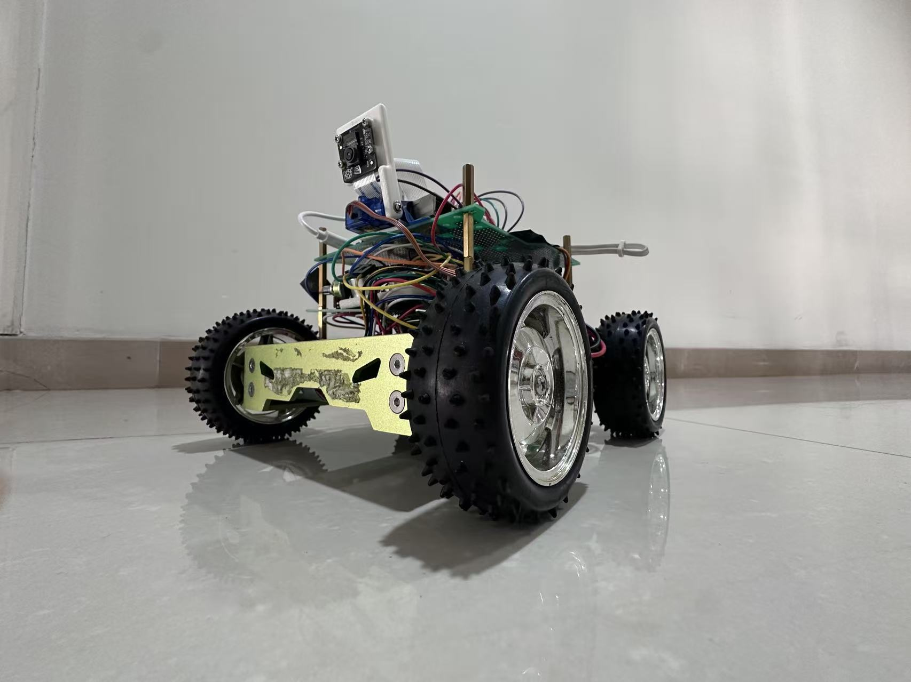

Multi-Module Raspberry Pi Robotic Vehicle Design
February - May 2025
Designed a Raspberry Pi 3B robotic platform integrating computer vision, line following, ultrasonic ranging, servo control, LCD/LED/audio feedback, and UART communication.
Validated hardware modules and system-level task coordination through line following, visual cue detection, task triggering, distance sensing, autonomous stopping, and multimodal feedback.